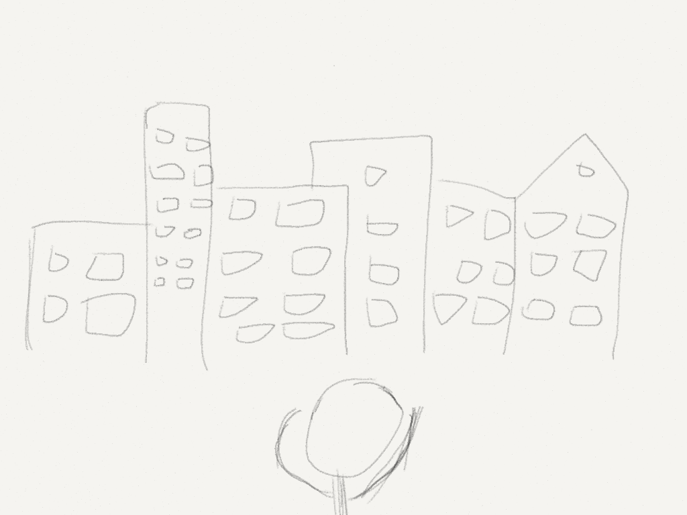
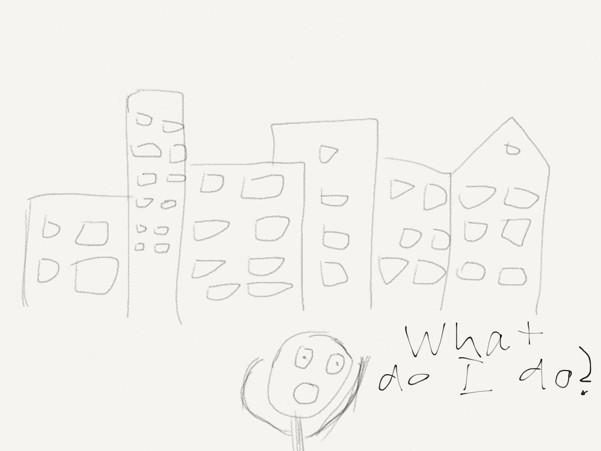
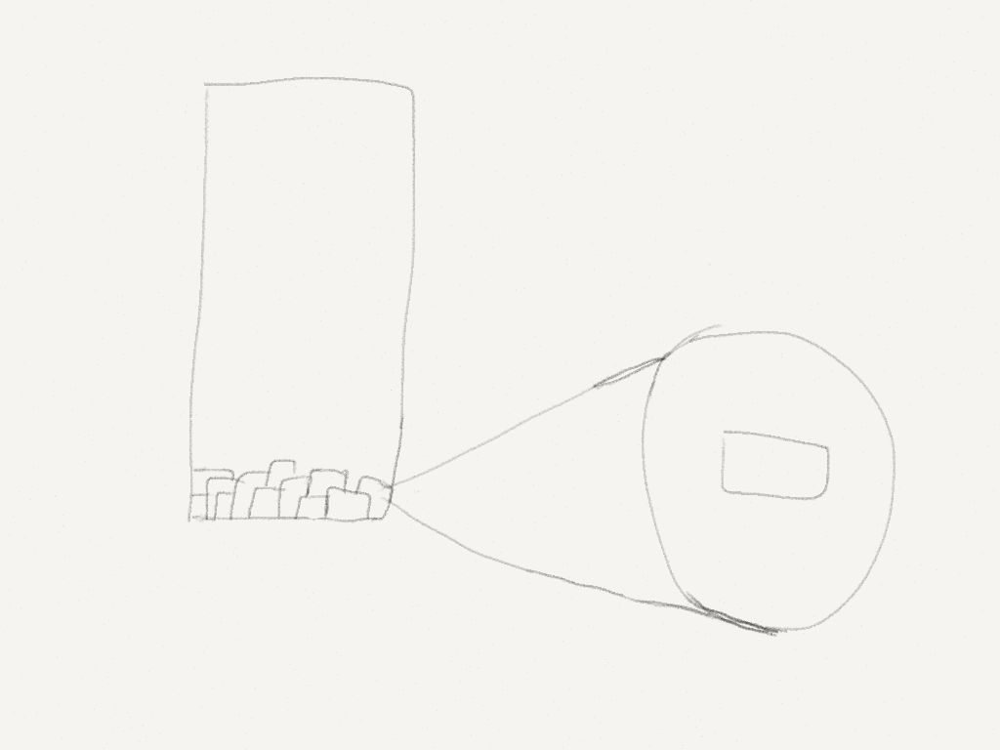

A lot of people think that we live in a fixed world. We grow up and we are told that there is a certain path that everyone follows in life. You graduate high school, go onto college, and then get a job as a lawyer/doctor/etc and become a breadwinner.
We live in a huge world. In some ways, it’s kind of mind boggling how we now have huge skyscrapers and lights and everything. Built in basically the last century, when the human race has wandered the world for about ten thousand years.
It’s kind of insane.

And it’s really easy to get intimidated by it. Looking at the overall scale can be easily overwhelming, making people feel lost.

But we can take apart buildings
If we took apart a brick building, we’d find that they are composed of thousands of bricks.

Bricks are the fundamental building blocks for huge buildings. Thousands of these bricks come together to form huge things.
Once you realize that building your life is just assembling many different bricks together for a while, you can begin to construct your world. It just takes patience to see it develop into something big.
But it isn’t about getting big or famous. It’s about architecting your life. Taking control of it. Steering the wheel yourself, instead being steered by outside influences.
You might run into trouble along the way. You might feel hopeless.Lose perspective on how far you’ve come.
But despite the struggles, it will be your story. Your struggles, your triumphs.
There is no substitute for a life of your own.